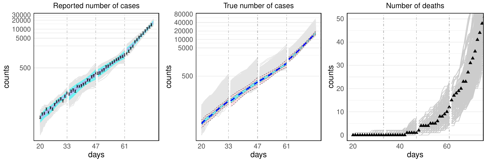

Towards Improved Uncertainty Quantification of Stochastic Epidemic Models Using Sequential Monte Carlo
2024 IEEE International Parallel and Distributed Processing Symposium Workshops (IPDPSW), pp. 843-852, 2024

Abstract
This work advances uncertainty quantification for stochastic epidemic simulators by integrating sequential Monte Carlo methods into calibration and inference workflows.
The methodology targets robust estimation of latent epidemic dynamics under noisy simulations and imperfect observational data, with emphasis on practical epidemiological use cases.
Results show that sequential Monte Carlo based calibration can improve stability and interpretability of uncertainty estimates in high-variance outbreak modeling pipelines.
Citation
BibTeX
@inproceedings{fadikar2024towardsuq,
title={Towards Improved Uncertainty Quantification of Stochastic Epidemic Models Using Sequential Monte Carlo},
author={Fadikar, Arindam and Stevens, Abby and Collier, Nicholson and Toh, Kok Ben and Morozova, Olga and Hotton, Anna and Clark, Jared and Higdon, David and Ozik, Jonathan},
booktitle={2024 IEEE International Parallel and Distributed Processing Symposium Workshops (IPDPSW)},
pages={843--852},
year={2024},
organization={IEEE},
doi={10.1109/IPDPSW63119.2024.00151}
}